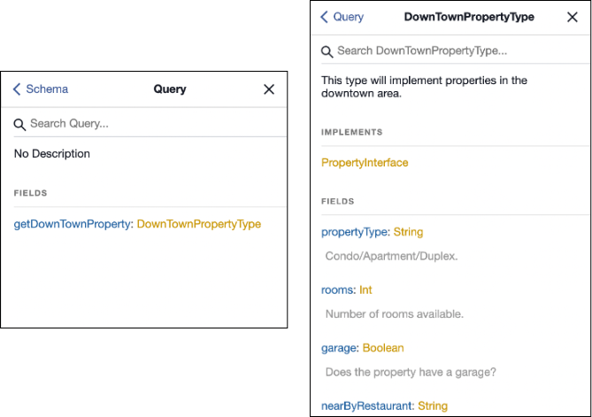
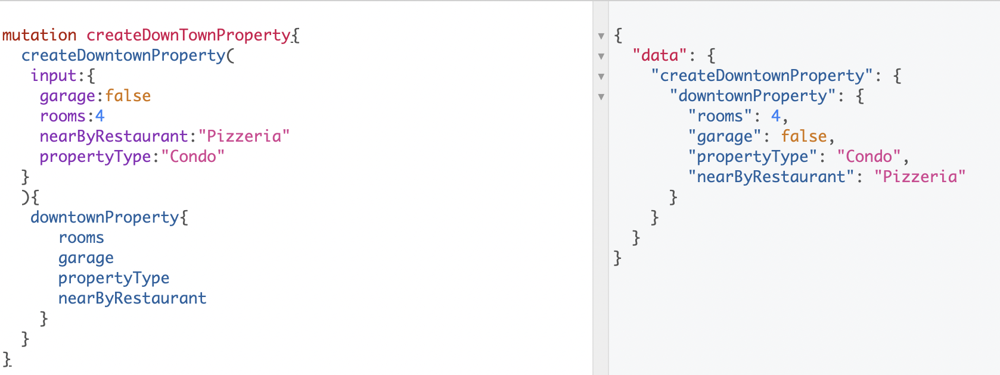

GraphQL Interface
Also known as abstraction, mixin, base classes. Although, I like the word interface because it reminds me of its similarity with an electric socket, that needs something to be plugged into it to be useful.
In the image below, we can see the behavior of an interface (socket).

It merely provides power to the objects nothing more. If the objects are powered using a battery, then we don't even need the interface (socket) except for charging the batteries, but you get the idea.
Usage¶
The big picture is you need an interface if one or more objects share a common way to operate.
BUT don't overuse it. Just because you have a socket doesn't mean you don't check the voltage, shape of the plug, or electric bill. You have to be cautious.
Key difference¶
Often missed in explanations is that interfaces are meant to be used for returning object types. Meaning if you want to use them to create/update data don't use interfaces. Go with creating a base class in your preferred language.
How to use interfaces (in queries/reading data)?¶
Let's say we want to build an API for the housing market.
Note: examples are using graphene which is a python library. And, again interfaces are meant to return data and not create data.
types.py¶
import graphene
class PropertyInterface(graphene.Interface):
"""
A generic base class that all property types should implement.
"""
property_type = graphene.String(description="Condo/Apartment/Duplex.")
rooms = graphene.Int(description="Number of rooms available.")
garage = graphene.Boolean(description="Does the property have a garage?",
default_value=False)
class DownTownPropertyType(graphene.ObjectType):
"""
This type will implement properties in the downtown area.
"""
class Meta:
interfaces = (PropertyInterface,)
near_by_restaurant = graphene.String()
schema.py¶
import graphene
from . import types
class Query(graphene.ObjectType):
get_down_town_property = graphene.Field(types.DownTownPropertyType)
schema = graphene.Schema(query=Query)
GraphiQL viewer¶
Using the viewer we can take a look at the get_down_town_property query:

This means when we query get_down_town_property we have access to the interface fields as well.
query getDowntownProperty{
getDownTownProperty{
propertyType # Inherited from interface
rooms # Inherited from interface
garage # Inherited from interface
nearByRestaurant
}
}
We will use ☝️ type in a mutation that is created ⬇️
Using a base class as an interface in mutations.¶
types.py¶
# Here we are using graphene.InputObjectType instead of graphene.Interface.
class PropertyInputBase(graphene.InputObjectType):
"""
A generic base class that all input objects should implement.
"""
property_type = graphene.String(description="Condo/Apartment/Duplex.")
rooms = graphene.Int(description="Number of rooms available.")
garage = graphene.Boolean(description="Does the property have a garage?",
default_value=False)
# Inherit the PropertyInputBase (aka interface, aka base class)
class DownTownInputType(PropertyInputBase, graphene.InputObjectType):
near_by_restaurant = graphene.String()
schema.py¶
class CreateDowntownProperty(graphene.Mutation):
class Arguments:
input = types.DownTownInputType()
# Output type of the data.
# Note: We are using graphene.ObjectType that uses an interface.
downtown_property = graphene.Field(types.DownTownPropertyType)
def mutate(root, info, input):
return CreateDowntownProperty(downtown_property=input)
class Mutation(graphene.ObjectType):
create_downtown_property = CreateDowntownProperty.Field()
schema = graphene.Schema(mutation=Mutation)
Below is a screenshot that shows the flow of mutation. Here we have an input which uses the DownTownInputType that uses
a shared base class. Whereas the output is of type DownTownPropertyType which uses an interface created above.

We can call the mutation from the GraphiQL viewer in the following way:

Resources¶
There are some great examples mentioned in the Production Ready Graphql which is a book written by Marc-André Giroux.
Graphene documentation.
The API team at my work Octopus Energy.
If you have any questions or comments reach out to me via twitter